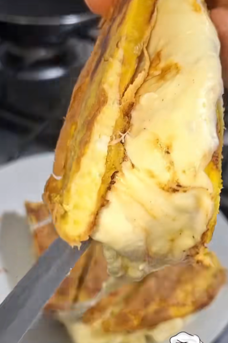
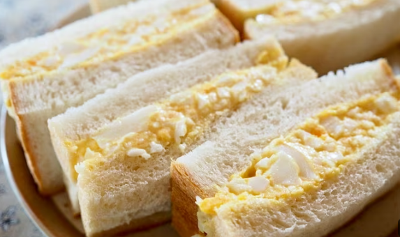
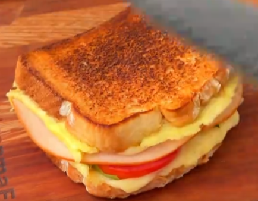
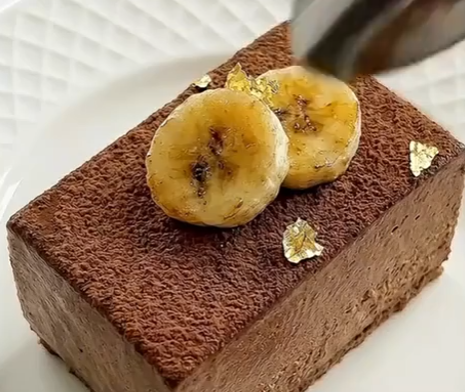
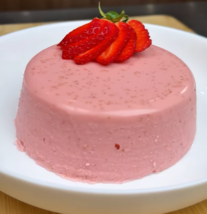

Plátano Verde
Plátano Verde
Torta para relleno 2 personas
Ingredientes
- 1 Plátano verde
- 100 gr de queso fresco
- [2 huevos]
- Se usa el queso o huevo solo uno
- sal
Probar con la mitad que es para una sola persona y una vez con queso y otra con huevo
Preparación:
- Rayar el plátano muy fino
- El Queso o huevo
- Unir todo, ponerlo en la sartén y extenderlo
- Cocinar unos 7 minutos por lado
- Rellenar con pollo, Palta, aceitunas o carne
 Nube de Manzana
Nube de Manzana
Postre
Ingredientes
- Manzana 300 gr
- Agua 100 ml
- Miel
- Canela y Clavo
- Gelatina 20 gr
Preparación:
- Pelar y cortar las manzanas sancocharlas con canela y clavo
- Cuando este frio agregar la miel y gelatina y batir unos 15 minutos, hasta que doble o triplique el volumen
- En un molde forrado con papel de horno refrigerar 3 horas mínimo bien tapado
- Se decora con Chantilly, o fresa, o cualquier fruta
 CAFÉ
CAFÉ
Capuchino 1
Ingredientes
- 2 tz de hielo
- 1 cda de café instantáneo
- 2 cdas de cacao
- Stevia o miel
- 200 ml de leche
- 2 cdas de yogurt griego
receta del video TIP
- 120 ml de café negro sin azúcar
- 1 taza de copos de avena
- Canela en polvo al gusto 1 cda
- 1 cucharada de miel (opcional)
- 1 cucharada de cacao
- se pone en un vaso y al congelador
- se come como helado o capuchino si se agrega leche
Preparación:
- Agregar los ingredientes poco a poco a la licuadora
- No licuar demasiado el hielo
- servir inmediatamente
CAFÉ
CAPUCHINO2
Ingredientes
- 1 Tza de avena
- 1 tza de café pasado
- 1/2 taza si es azúcar o equivalente de otro Endulzante
- 1 tza leche
- 1 cda de café instantáneo
- 1 tza de hielo
- canela molida
Preparación:
- Remojar la avena en el café pasado unos 20 minutos mínimo
- Escurrir y poner en la licuadora
- agregar el resto de ingredientes, menos la canela
- Al servir espolvorear un poquito de canela
Bolovo
Brasil
Ingredientes
- 4 huevos Duros
- Carne molida
- Perejil
- harina
- pan molido
- 1 huevo
- ajo, sal pimienta
Preparación:
- aderezar la carne, con ajo, sal, pimienta y perejil. Agregar el huevo sin cocer y integrarlos
- tomar un huevo duro y cubrirlo con la carne
- pasarlo por harina, huevo y finalmente pan molido
- Freír
Muffing
De Huevo
Ingredientes
- Espinaca
- Pimiento
- Cebolla china
- proteína (pollo, carne, pavo, etc)
- sal
- Pimienta
- ajo en polvo o bien picado
- 1 huevo por cada Muffing
- queso mozzarella
Preparación:
- En un boll unir la espinaca, pimiento, cebolla china, la proteína,
- Poner la mezcla en cada recipiente de muffing y agregar un poco de queso
- batir los huevos con sal y pimienta y agregar a cada recipiente hasta cubrir
- Llevar al horno por 15 minutos

TortillaDe Plátano
Ingredientes
- 1 plátano
- 2 huevos
- sal
- queso fundido o mozzarella
Preparación:
- freír el plátano bien delgadas
- batir los huevos con sal y agregar
- Al voltear agregar el queso y doblar, mantener un minuto
- Cortar en 4 partes

Tamago SandoSandwich Japonés
Ingredientes
- 2 huevos duros
- Mayonesa
- Mostaza
- sal
- Cebolla china
Preparación:
- Picar en cubos pequeños los huevos duros
- Agregar una cucharada de mayonesa o yogurt griego, mostaza, sal, pimienta y cebolla china

OmeletSandwich
Ingredientes
- 2 tajadas de Pan
- 2 huevos
- sal pimienta
- Tomate
- Queso
- Jamón
- perejil
Preparación:
- Echar el huevo batido a la sartén con las especias y el pan
- Voltear y acomodar la tortilla a las dimensiones del pan
- agregar el queso, el tomate, el jamón y alguna hierba
- Doblar y cortar

MousseChocolate y Plátano
Ingredientes
- plátano
- leche
- cacao
Preparación:
- licuar el plátano con la leche y el cacao
- Hervir unos minutos la mezcla
- Poner en un molde y refrigerar
- Adornar con la misma fruta

Torta HeladaFit
Ingredientes
- 1/2 kg de fresas
- 4 cdas de yogurt griego
- 3 cdas de miel
- 20 gr de gelatina sin sabor
Preparación:
- Todos los ingredientes en una licuadora
- La gelatina diluida en agua fría 50 ml por cada 10 gr
- Hidratar: poner los 20gr en agua durante 5-10 minutos cuando se esponja
- en baño maría hasta que esté líquida
- refrigerar al menos 6 horas